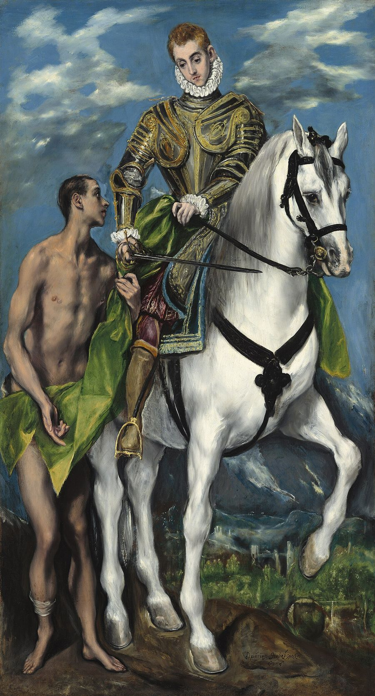
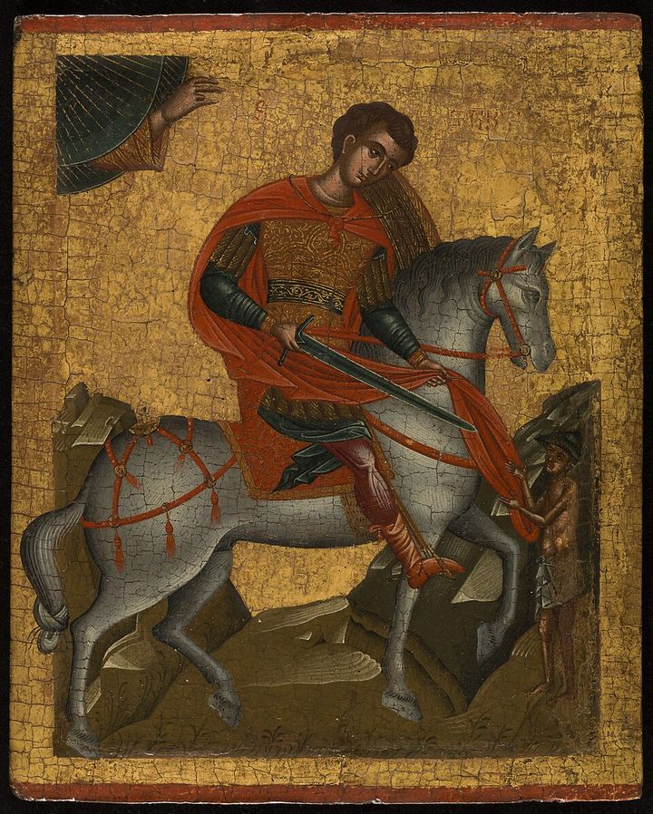
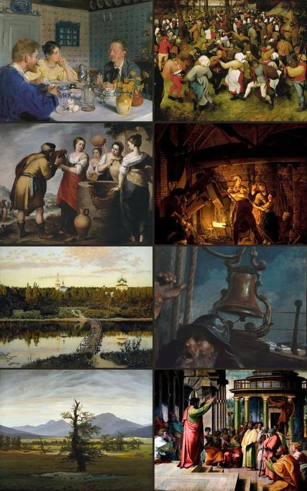

Martin of Tours
Soldier turned monk and bishop, and one of the best loved saints of Gaul.
Picture: Saint Martin and the Beggar, El Greco, 1597-1599. National Gallery of Art, Washington. CC0.
Who was Martin?
Martin was a Roman cavalryman who became a monk, then bishop of Tours in Gaul. He is best known for cutting his cloak in two for a freezing beggar. He founded what may be the first monastery in Gaul. He refused to flatter an emperor. He was one of the first saints honoured who did not die a martyr.
at a glance
His roles, in order
- SoldierForced to enlist at 15
- ExorcistUnder Hilary of Poitiers
- MonkFounded a monastery near Poitiers
- BishopOf Tours, 371 to 397
in numbers
-
Enlisted at15
- Imperial guard cavalry
- Under Constantius, then Julian
-
Raised the dead3
- Two as a monk
- One as bishop
-
Disciples80
- At Marmoutier, near Tours
- They owned nothing
-
Years a bishop26
- From 371
- Still lived as a monk
-
Died at81
- In his 81st year, says Gregory of Tours
- About 61, if he was born in 336
-
At his funeral2,000
- Monks, almost two thousand, it was said
- The whole city came out
- Born
- About 316. Some scholars say about 336. At Savaria in Pannonia, today Szombathely in Hungary.
- Grew up
- At Ticinum, today Pavia in Italy. His parents were pagans.
- Died
- 8 November 397, at Candes in his own diocese. He had a fever, and he was old.
- Buried
- At Tours, three days later.
- Also called
- Martin the Merciful, in the Russian Church and the OCA. Martin the Wonderworker, in Greek.
- Status
- A saint to Catholics, Orthodox and Anglicans. Lutherans remember him too.
- Patron of
- France. Britannica adds soldiers and tailors.
- In art
- Cutting his cloak in two with his sword for a beggar, usually on horseback.
- Wrote
- Nothing that survives.
- Pronounced
- MAR-tin of TOOR. The s in Tours is silent.

His personality type
Sure of himself, and at his best when life is quiet.
In Gregory the Great's terms
- Confident
- Tranquil mind
Our reading, from the Christian Personality Test. Confident here means steady and hard to rattle, never proud. His cloak also stands for The Giver, one of the test's seven roles.
See The Oakfeast days
East and West, side by side
West
- Jul4
In the 1916 Roman Martyrology: his body moved, and his church at Tours dedicated.
- Nov11
Catholic memorial. Also the Church of England, the Episcopal Church, and Lutherans in the Missouri Synod and the ELCA.
East
- Oct12
Russian Church, on the old calendar. That is 25 October on today's calendar.
- Nov11
OCA, which also lists 12 October.
- Nov12
Greek churches.
Why 11 November? He died on the 8th and was buried on the 11th, and the West keeps the day of his burial. Churches on the old calendar keep each date 13 days later, so 12 November falls on 25 November.
what was he like?
+always the same
His disciple says no one ever saw him angry or excited, grieving or laughing. His face showed “a kind of heavenly happiness”.
Life of St Martin, chapter 27+patient with a hard man
His own priest, Brictio, was abusive. Martin kept him on, and often said, “If Christ bore with Judas, why should not I bear with Brictio?” Brictio became bishop after him, and is remembered as St Brice.
Dialogues, Dialogue III, chapter 15+gave it all away
He was given a gift of silver, and he gave it away. His monks were hungry and in rags. He told them, “Let the church both feed and clothe us, as long as we do not appear to have provided, in any way, for our own wants.”
Dialogues, Dialogue III, chapter 14+no flatterer
At a banquet, he passed the emperor's cup to his own priest, “as thinking no one worthier to drink next to himself”.
Life of St Martin, chapter 20what others said of him
Almost everything we know comes from one friend. Sulpicius Severus wrote his Life of St Martin while Martin was still alive.
Never did a single hour or moment pass in which he was not either actually engaged in prayer; or, if it happened that he was occupied with something else, still he never let his mind loose from prayer.
…in Martin alone, apostolic authority continued to assert itself.
For who ever suffered but Martin suffered along with him?
his life in six moments
Amiens
A young soldierThe cloak
One bitter winter, at the gate of Amiens, a man with no clothes begged, and everyone walked past him. Martin had already given away his other clothes. So he cut his soldier's cloak in two with his sword and gave the man half. That night he dreamed of Christ wearing that half. Christ said to the angels, “Martin, who is still but a catechumen, clothed Me with this robe.”
Life of St Martin, chapter 3Near Worms
Before a battleLeaving the army
Julian, then Caesar, was handing out a bonus to his men. Martin asked to leave the army instead. Called a coward, he offered to stand unarmed in front of the battle line the next day. The enemy asked for peace first.
Life of St Martin, chapter 4Poitiers
About 360Hilary, and a monastery
Free of the army, he went to Hilary, bishop of Poitiers. Hilary wanted to make him a deacon, but Martin kept saying he was unworthy. So Hilary made him an exorcist, a lowly office Martin would not refuse. After years of travel, he set up a monastery near Poitiers, at Ligugé. It may have been the first in Gaul.
Life of St Martin, chapters 5 to 7Tours
371Made bishop
Tours wanted him as its bishop, but he would not leave his monastery. So a citizen threw himself at his knees and said his wife was ill. Martin came out, and crowds along the road led him into the city. A few bishops said he looked shabby and his hair was a mess. The people laughed at them and had their way.
Life of St Martin, chapter 9Marmoutier
As bishopA hidden monastery
As bishop he still lived as a monk. When the crowds of visitors grew too much, he built a hidden monastery about two miles outside the city. His wooden cell stood between a cliff and the Loire. About eighty disciples lived there, and they owned nothing.
Life of St Martin, chapter 10Trier
About 385Before the emperor
At the court of the emperor Maximus, the other bishops flattered him. Martin would not. He begged Maximus not to put the followers of the heretic Priscillian to death. He said being put out of the Church was punishment enough, and a ruler should not judge a church case. Once, to save men already sentenced, he took communion for a day with the bishops who had pressed for the killings. He grieved over it for the rest of his life, and never went to a synod again.
Life, chapter 20; Sacred History, Book 2, chapter 50; Dialogue III, chapters 11 to 13
his miracles
Sulpicius tells dozens of wonders. He knew they would be doubted, and he made a promise at the start of the Life.
I implore those who are to read what follows to give full faith to the things narrated, and to believe that I have written nothing of which I had not certain knowledge and evidence.
raised from the dead
-
Ligugé
As a monkThe catechumen
A catechumen had joined Martin's monastery. He died of a fever while Martin was away, before he could be baptised. Martin sent everyone out, lay down on the body and prayed. Within about two hours the man began to move. He was baptised and lived for many years.
“they beheld the man alive whom they had formerly left dead”
The man told the story himself. He said he had stood before God's judgment, until two angels said he was the man Martin was praying for.
Life of St Martin, chapter 7 -
Lupicinus's estate
As a monkThe slave
Passing the estate of Lupicinus, a man of high standing, Martin found a crowd wailing. One of the household's slaves had hanged himself. Martin went in alone, lay on the body and prayed. The dead man woke, took Martin's right hand and stood up. Then he walked with Martin to the porch, in front of everyone.
“with life beaming in his countenance, and with his drooping eyes fixed on Martin's face”
The whole crowd saw him walk out, says Sulpicius.
Life of St Martin, chapter 8 -
On the road to Chartres
As bishopThe only son
They passed a village where no one knew a single Christian, and a huge crowd of pagans came out to meet him. A mother held up her dead son and begged him. Martin took the body in his arms, knelt and prayed, and gave the child back to her alive. The crowd asked to become Christians on the spot, and he made them all catechumens there in the plain.
“We know that you are a friend of God: restore me my son, who is my only one.”
Gallus, his disciple, was there: “I myself am a witness to this latter occurrence”.
Dialogues, Dialogue II, chapter 4
Martin used to tell Sulpicius that as a bishop he had less power to work wonders than he had before. Dialogues, Dialogue II, chapter 4
The falling pine
Martin had torn down a village's old temple, and he meant to cut down the sacred pine beside it. The pagans made him a deal: they would cut it down themselves if he stood where it fell. They bound him and set him where it would fall. As the tree came down, he raised his hand and made the sign of the cross. It swung round and fell the other way. Almost the whole crowd asked to become Christians that day.
“it swept round to the opposite side, to such a degree that it almost crushed the rustics”Life of St Martin, chapter 13
The leper at Paris
At the gate of Paris, with crowds around him, Martin kissed a leper and blessed him. The man was cleansed. The next day he came to church with healthy skin to give thanks.
“he gave a kiss to a leper, of miserable appearance, while all shuddered at seeing him do so”Life of St Martin, chapter 18
Paulinus's eye
Paulinus, later the famous bishop of Nola, had a thick skin growing over the pupil of one eye, and it hurt badly. Martin touched it with a paintbrush, and the pain went and the eye was healed.
“Martin touched his eye with a painter's brush”Life of St Martin, chapter 19
A globe of fire
On a great feast day, as Martin blessed the altar, a ball of fire rose from his head, trailing a long flame. The church was crowded, but only five people saw it: one consecrated virgin, one priest and three monks.
“we beheld a globe of fire dart from his head”Dialogues, Dialogue II, chapter 2
his words
Martin wrote nothing that survives. These are his words as Sulpicius Severus recorded them, in Alexander Roberts's translation of 1894.
Before a battle near Worms
I am the soldier of Christ: it is not lawful for me to fight.
To Julian, then Caesar, when he asked to leave the army. In Latin, Christi ego miles sum: pugnare mihi non licet.
Life of St Martin, chapter 4The Lord Jesus did not predict that He would come clothed in purple, and with a glittering crown upon His head. I will not believe that Christ has come, unless He appears with that appearance and form in which He suffered, and openly displaying the marks of His wounds upon the cross.
See, she has fulfilled the precept of the Gospel: she had two coats, and one of them she has given to him who had none: thus, therefore, ye ought also to do.
This is a picture of how the demons act: they lie in wait for the unwary and capture them before they know it: they devour their victims when taken, and they can never be satisfied with what they have devoured.
The Lord is my helper; I will not fear what man can do unto me.
often misquoted
He hid among geese to escape being made bishop, and their honking gave him away. That is why geese are eaten at Martinmas.
What the sources sayA later legend. Sulpicius tells a different story: a citizen pretended his wife was ill, to get Martin out of his monastery.
Life of St Martin, chapter 9; New Liturgical Movement, 2022He gave only half his cloak because the other half belonged to the army.
What the sources saySulpicius does not say this. He says Martin had nothing left but the cloak, “for he had already parted with the rest of his garments for similar purposes”.
Life of St Martin, chapter 3When he woke, his cloak was whole again.
What the sources sayNot in Sulpicius, who says nothing of the cloak being restored. Britannica tells it as a legend.
Life of St Martin, chapter 3; BritannicaHe was riding a horse when he met the beggar.
What the sources saySulpicius never mentions a horse. The painters added it, as El Greco did.
Life of St Martin, chapter 3He said it to the emperor Julian the Apostate.
What the sources sayJulian was then Caesar, a junior ruler, not yet emperor. Sulpicius writes “Julian Cæsar”.
Life of St Martin, chapters 2 and 4His sermons, or his Confession of Faith.
What the sources sayNothing he wrote survives. The confession of faith once credited to him is not thought to be his.
New Catholic Encyclopediawhere he stood
Each line is Martin’s, as Sulpicius Severus recorded it. TapClick “Show his line” to read it.
“A good hearty laugh is good for the soul.”
Martin disagrees.
Show his line
No one ever saw him enraged, or excited, or lamenting, or laughing.Life of St Martin, chapter 27, as Sulpicius Severus recorded it
“If you had to choose, you'd grow closer to God alone in quiet than among other people.”
Martin agrees.
Show his line
Martin was accustomed to say to you, that such an abundance of power was by no means granted him while he was a bishop, as he remembered to have possessed before he obtained that office.Dialogues, Dialogue II, chapter 4, as Sulpicius Severus recorded it
“If someone you know is doing wrong, it's your job to tell them.”
Martin agrees.
On record in the Dialogues. Not quoted here.
“The best way to live is free of strong emotions, with only a steady peace inside.”
Martin strongly agrees.
Show his line
No one ever saw him enraged, or excited, or lamenting, or laughing; he was always one and the same: displaying a kind of heavenly happiness in his countenance, he seemed to have passed the ordinary limits of human nature.Life of St Martin, chapter 27, as Sulpicius Severus recorded it
“Your body is a friend to look after, not an enemy to fight.”
Martin disagrees.
Show his line
It is not fitting that a Christian should die except among ashes; and I have sinned if I leave you a different example.Letter 3, to Bassula, as Sulpicius Severus recorded it
“God still speaks to people through dreams.”
Martin agrees.
On record in Life of St Martin. Not quoted here.
“Miracles still happen today, just as they did in the Bible.”
Martin strongly agrees.
On record in the Dialogues. Not quoted here.
“A church should keep out people who openly live in serious wrongdoing.”
Martin agrees.
On record in the Dialogues. Not quoted here.
“A Christian can fight in a just war with a clear conscience.”
Martin strongly disagrees.
Show his line
I am the soldier of Christ: it is not lawful for me to fight.Life of St Martin, chapter 4, as Sulpicius Severus recorded it
“Governments should use their laws to promote the Christian faith.”
Martin disagrees.
On record in Sacred History. Not quoted here.
See where you stand beside him. Take the quiz
how he died
He died of a fever in old age, at Candes in his own diocese, on 8 November 397.
He had gone there to make peace among the local clergy. He knew his end was near. Once they were reconciled, his strength failed, and his disciples begged him not to leave them.
He died lying on sackcloth and ashes, praying, with his eyes on heaven. He would not let them put straw under him. He was buried at Tours three days later.
Sulpicius was not there. Two monks from Tours brought him the news.
His prayer
O Lord, if I am still necessary to Thy people, I do not shrink from toil: Thy will be done.
His last words, to the devil
Why do you stand here, thou bloody monster? Thou shalt find nothing in me, thou deadly one: Abraham's bosom is about to receive me.
“As he uttered these words, his spirit fled.”
is he a saint?
Yes. Catholics, Orthodox and Anglicans count him a saint, and Lutherans remember him too.
- CatholicSaintA memorial on 11 November
- OrthodoxSaintCalled Martin the Merciful
- AnglicanSaintA Lesser Festival in the Church of England
- LutheranRememberedMissouri Synod and ELCA, 11 November
He was honoured as a saint from the first. He was one of the first saints honoured who did not die as a martyr. His disciple saw it coming:
…although the character of our times could not ensure him the honor of martyrdom, yet he will not remain destitute of the glory of a martyr.
At Tours, in France, the birthday of blessed Martin, bishop and confessor, whose life was so renowned for miracles that he received the power to raise three persons from the dead.
what to read first
The Life of St Martin
Sulpicius Severus
Written by a friend while Martin was still alive. It is short, and almost everything else comes from it.
Read it freeThe Dialogues
Sulpicius Severus
Friends trading stories about Martin, over a long conversation.
Read them freeHistory of the Franks, Book 1
Gregory of Tours
Chapters 36 and 48: his birth, his death and the fight over his body. Written nearly two centuries later, by a bishop of Tours.
Read it freetake the quizzes

Quiz Christian Personality Test Martin reads as The Oak. Find your own type. Startpeople like him
As a young man he ran from praise and lived three years alone in a cave. When his own monks tried to poison him, he faced them “with a mild countenance and quiet mind”. When a raging Goth shouted at him to get up, the Goth ended at his feet, and Benedict “rose not up from his reading”.
St Gregory the Great, Dialogues John the BaptistThe OakHe lived in the wilderness until the day he began to preach. Jesus asked the crowds if they had gone out to see “a reed swaying in the wind”. St Gregory says a reed bends to praise or blame, but “no variety of circumstance bent him from his uprightness”.
Luke 1:80; Matthew 11:7; St Gregory the Great, Homilies on the Gospels Mary of BethanyThe OakWhen Jesus came to their home, her sister Martha was busy with all the preparations. Mary sat at His feet and listened. Jesus said she “has chosen the good portion”.
Luke 10:38-42sources
His life, and his words
- Sulpicius Severus, Life of St Martin. Tr. Alexander Roberts, 1894.
- Sulpicius Severus, Letters 1 to 3. Same edition.
- Sulpicius Severus, Dialogues. Same edition.
- Sulpicius Severus, Sacred History, Book 2. Same edition.
- The Latin text of the Life, Halm's edition.
- Gregory of Tours, History of the Franks. Tr. Ernest Brehaut, 1916.
Reference
- New Catholic Encyclopedia, 2nd edition, “Martin of Tours, St.”
- Catholic Encyclopedia, 1910, “St. Martin of Tours”
- Britannica, “St. Martin of Tours”
- New Liturgical Movement, on the goose legend, 2022
- Merriam-Webster, “Tours”, for how to say it
Calendars
- USCCB, Memorial of Saint Martin of Tours
- The Roman Martyrology, 1916 edition
- OCA, Saint Martin the Merciful
- Great Synaxaristes and saint.gr, Greek
- azbyka.ru, Russian
- Church of England, Common Worship calendar
- The Episcopal Church, Lesser Feasts and Fasts 2022
- The Lutheran Witness, LCMS, November 2008
- Evangelical Lutheran Worship, ELCA, the church year
Pictures
- Saint Martin and the Beggar, El Greco, 1597-1599. National Gallery of Art, Washington. CC0.
- Saint Martin, Cretan-Venetian school, about 1500. Petit Palais, Paris. Paris Musées, CC0.
- The Lonely Tree, Caspar David Friedrich, 1822. Public domain.